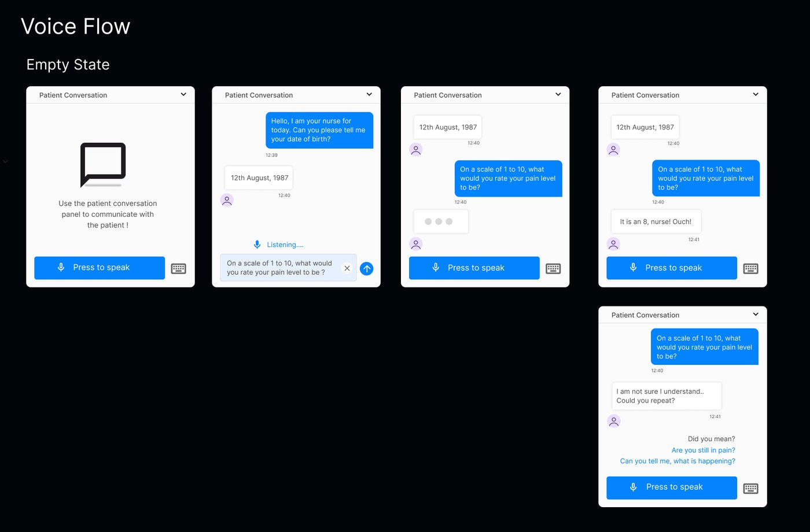
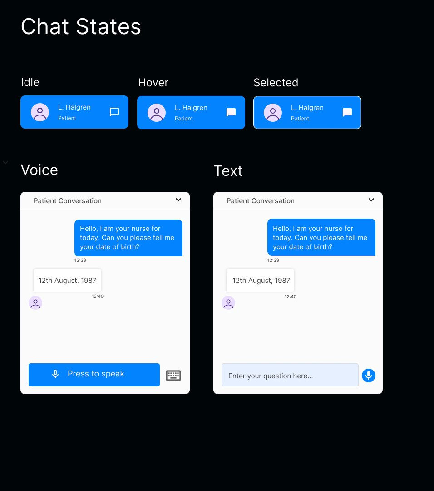
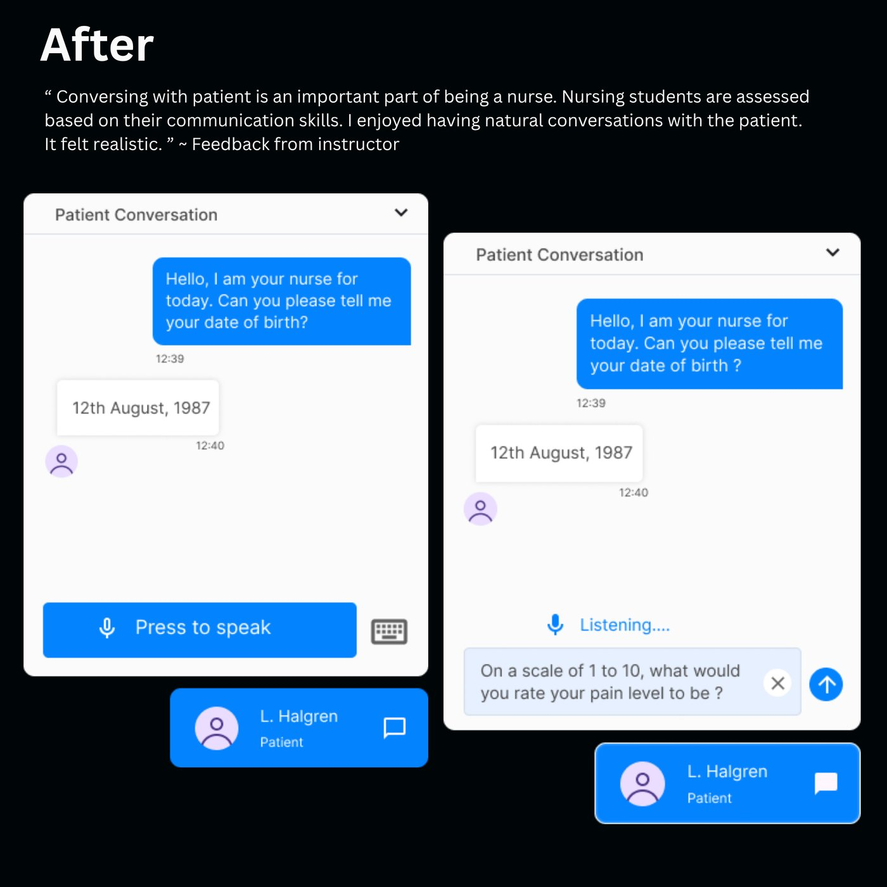

Designing a conversational AI for nursing training
Talking to patients is a skill nursing students are formally assessed on - but the simulation only let them communicate through preset phrases. I designed a conversational AI feature, with detailed voice and text workflows, that lets students hold realistic, natural patient dialogues.
The problemA conversation you couldn't actually have
"The hardest thing was to communicate with the patient with preset things, because maybe not everything you want to communicate is in there." - Participant, usability test
The original patient conversation was a long menu of pre-written phrases. Students scrolled, hunted, and settled for the closest available option - the exact opposite of the judgment and empathy the exercise was meant to build. If the thing you wanted to say wasn't on the list, you simply couldn't say it.
For a skill that instructors formally assess, the interface was practicing students in the wrong behavior: selecting instead of communicating.
The designTwo ways to talk, one natural conversation
The redesign replaced the preset list with open conversation through two input modes - voice ("Press to speak", with a live "Listening…" state and an editable transcription before sending) and free text. Students switch between them with one tap, so the mode fits the moment: speaking aloud for realism, typing in noisy sim labs.
I mapped the complete conversational flows for both modes - empty states that invite the first message, response states, typing indicators, and crucially the failure states: when the patient doesn't understand, the design recovers gracefully with "Did you mean?" suggestions instead of a dead end.


Every state was specified in detail and reviewed with engineering to align the design with what the AI could technically deliver - the collaboration that turned realistic dialogue from a concept into a shipped feature.
The resultIt felt realistic
"Conversing with patient is an important part of being a nurse. Nursing students are assessed based on their communication skills. I enjoyed having natural conversations with the patient. It felt realistic." - Instructor feedback
